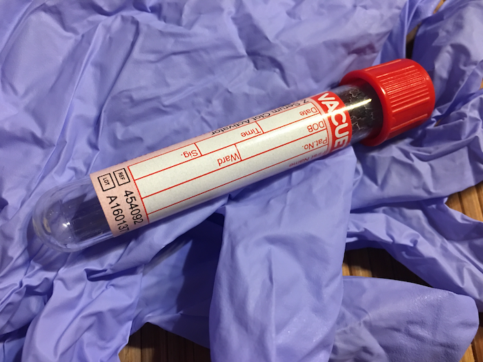

Chapter 2 Validation of DNA Interpretation Systems
Sam Tyner
Acknowledgements
This work would not have been possible without the excellent documentation of the strvalidator package (Hansson, Gill, and Egeland 2014). Thank you to the package’s author, Oskar Hansson, Ph.D, who has authored many, many supporting documents, tutorials, etc. for his strvalidator package. Thank you, Oskar!

2.1 Introduction
The earliest documented use of DNA profiling in the legal system was an immigration dispute in the United Kingdom (Butler 2005). A young man of Ghanaian descent with family in the UK was believed to have forged his Ghanaian passport and had an expired British passport2. DNA profiling techniques developed by Sir Alec Jeffreys were used to prove that the he was indeed his mother’s son, and thus he did have a right to immigrate to the UK. The technique was subsequently used for many other parentage cases, and soon after, DNA profiling was used for the first time to convict someone of murder in 1986 (Butler 2009).
When DNA profiling began, an individual’s blood sample was taken to create their DNA profile. Now, DNA can be taken by a cheek swab, and minute traces of touch DNA can tie a perpetrator to the scene of the crime. This is thanks to the polymerase chain reaction (PCR), a method of copying a DNA sample over and over again to amplify the genetic signal for profile extraction. Once a DNA sample is amplified with PCR, different DNA markers can be analyzed to make an identification. The standard for forensic DNA typing is to use short tandem repeats (STRs) as the DNA marker. Other markers, single nucleotide polymorphisms (SNPs) and the mitochondrial genome (mtDNA), have different uses. SNPs can be used to identify ancestry or visible traits of a human, while mtDNA is used in cases where DNA is highly degraded (Liu and Harbison 2018). Because STR is the standard, we dedicate the rest of this chapter to its methodology.
2.1.1 Procedure for DNA Analysis using STRs
In order to understand the STR methodology, we first need to understand what is being analysed. We present the comparison of genetic and printed information from Butler (2009) in Table 2.1. When forensic scientists analyze a DNA sample, they are looking for repeated “words” or DNA sequences in different “paragraphs,” or loci. The locus information is stored in the chromosome, which is the “page” the genetic information is on. Your chromosomes exist in the nucleus of every cell in your body, just like a page is within a chapter in a book in a library. STR markers are a set of loci or genes. At each locus, the number of times a tetranucleotide sequence (e.g. AAGC) repeats is counted (Butler 2005). This count indicates the allele, or gene variation, at that particular locus.
| Printed Information | Genetic Information |
|---|---|
| Library | Body |
| Book | Cell |
| Chapter | Nucleus |
| Page | Chromosome |
| Paragraph | Locus or gene |
| Word | Short DNA sequence |
| Letter | DNA nucleotide |
In forensic DNA profiling, a particular set loci are examined for comparison. The number of loci depends on the equipment and method used to analyzed the DNA sample, but can be as high as 27 for the particular method we discuss here (Butler, Hill, and Coble 2012). As of January 1, 2017, there are 20 core loci in CODIS, the Combined DNA Index System, which is the FBI’s national program for DNA databases and software used in criminal justice systems across the United States (FBI 2017). These sets of loci were chosen because of their high variability in the population. To find the alleles at each loci, the DNA sample is amplified using PCR, and then run through capillary electrophoresis (CE). The result of CE is the DNA profile, with the alleles on each locus indicated by different colored peaks from a chemical dyeing process.
The amplification process introduces random change known as slippage, which creates stutter peaks in the observed DNA profile that are different than the true allele peaks (Butler 2009). In addition, different labs may use different machines and materials in forensic analysis resulting in different measurements for the same DNA sample. Thus, the validation of methods and materials is a crucial step. According to the Scientific Working Group on DNA Analysis Methods (SWGDAM), “validation is a process by which a procedure is evaluated to determine its efficacy and reliability for forensic casework and/or database analysis” (SWGDAM 2016). Validation helps minimize error in forensic DNA analysis and helps keep results consistent across laboratories and materials.
The process of validation for forensic DNA methodology is expensive, time consuming, and unstandardized, and the R package strvalidator was created to help solve these problems in forensic DNA analysis (Hansson, Gill, and Egeland 2014). The strvalidator package makes the validation process faster by automating data analysis with respect to “heterozygote balance, stutter ratio, inter-locus balance, and the stochastic threshold” (Hansson, Gill, and Egeland 2014). In the remainder of this chapter, we introduce the type of data to import for use of this package, the primary functions of the package, and show an example of each of the four aforementioned validation steps in R.
2.2 Data
The strvalidator package takes files exported from the GeneMapper® software, or a similar expert system that exports tab-delimited text files, as inputs. The data exported from these software programs typically come in a very wide format, and on import it needs to be transformed into a long format more appropriate for data analysis. In Figure 2.1, we visualize the process of data being transformed from wide to long format and back. In wide format, variable values are column names, while in the long format these column names become part of the data.
Figure 2.1: Animation heuristic showing the transformation from long form to wide form data and back. Code for GIF from Omni Analytics Group
The strvalidator package contains import methods to make sure that the data imported from other software is in the right form for validation analysis. The GeneMapper® software creates one column for each possible allele observed at a locus and their corresponding sizes, heights, and data points. Once the data have been trimmed and slimmed, they look something like this:
head(myDNAdata)## Sample.Name Marker Dye Allele Height
## 1 03-A2.1 AMEL B X 27940
## 2 03-A2.1 AMEL B Y 107
## 3 03-A2.1 D3S1358 B OL 80
## 4 03-A2.1 D3S1358 B OL 453
## 5 03-A2.1 D3S1358 B OL 85
## 6 03-A2.1 D3S1358 B OL 408where
Sample.Nameis the name of the sample being analyzedMarkeris the locus in the DNA analysis kitDyeis the dye channel for that locusAlleleis the allele (# of sequence repeats) at that locusHeightis the observed peak height after amplification in RFUs (RFU = Relative Fluorescence Unit)
2.3 R Package
The package strvalidator has a graphical user interface (GUI) to perform analyses so that no coding knowledge is necessary to run these analyses. The author of the package, Oskar Hansson, has written an extensive tutorial3 on the GUI. As this book is focused on open science, we do not use the GUI because it does not output the underlying code used for the point-and-click analyses. Instead, we use the code that powers the GUI directly. This code is called the “basic layer” of the package by Hansson, Gill, and Egeland (2014).
The data are read into R via the import() function. This function combines the processes of trimming and slimming the data. Trimming selects the columns of interest for your analysis (e.g. Sample.Name, Allele, Height), while slimming converts the data from wide format to long format, as shown in Figure 2.1.
After the data has be loaded, there are four main families of functions in the strvalidator package that are used for analysis.
add*(): Add to the DNA data. For example, useaddMarker()to add locus information oraddSize()to add the fragment size in base pair (bp) for each allele.calculate*(): Compute properties of the DNA data. For example, usecalculateHb()to compute heterozygous balance for the data orcalculateLb()to compute the inter-locus balance (profile balance) of the data.remove*(): Remove artifacts from the data withremoveArtefact()and remove spikes from the data withremoveSpike().table*(): Summarize results from one of thecalculate*()analyses. For example,tableStutter()summarizes the results fromcalculateStutter().
For complete definitions and explanations of all functions available in strvalidator, please see the strvalidator manual. There are many other capabilities of strvalidator that do not cover in this chapter for the sake of brevity.
2.4 Drawing Conclusions
There is no one tidy way to conclude a DNA validation analysis, which may be done for new machines, new kits, or any internal validation required. The strvalidator package’s primary purpose is to import large validation data sets and analyze the results of the validation experiment according to different metrics (Riman et al. 2016). A more complete description of the necessary validation studies is found in SWGDAM (2016), and full step-by-step tutorials can be found in Riman et al. (2016) and Hansson (2018).
For validation analysis with respect to heterozygote balance, stutter ratio, inter-locus balance, and stochastic threshold, there are recommended guidelines to follow.
2.4.1 Stutter ratio
The *Stutter() functions in strvalidator can analyze ratios of different types of stutter such as the backward stutter, the forward stutter, and the allowed overlap (none, stutter, or allele), as shown in Figure 2.4. Each of Hill et al. (2011), Westen et al. (2012), Brookes et al. (2012), and Tvedebrink et al. (2012) show greater stutter with more repeats, and these results are similar to those in Hansson, Gill, and Egeland (2014). In addition they found that some loci, such as TH01, experience less stutter on average than others.
2.4.2 Heterozygote balance
For guidelines specific to the PowerPlex® ESX 17 and ESI 17 systems featured in Hansson, Gill, and Egeland (2014), refer to Hill et al. (2011). Generally speaking, per Gill, Sparkes, and Kimpton (1997), the heterozygote balance should be no less less than 60%.
2.4.3 Inter-locus balance
Per Hansson, Gill, and Egeland (2014), there are two methods in strvalidator to compute inter-locus balance.
- As the proportion of the total peak height of a profile
- Relative to the highest peak total within a single locus in the profile, with the option to compute this value for each dye channel.
Ideally, the loci would be perfectly balanced and the total peak height in each locus would be equal to \(\frac{1}{n}\) where \(n\) is the number of loci in the kit (Hansson, Gill, and Egeland 2014).
2.4.4 Stochastic threshold
The stochastic threshold (ST) or interpretation threshold is the “point above which there is a low probability that the second allele in a truly heterozygous sample has not dropped out” (Butler 2009). The ST is used to assess dropout risk in strvalidator. Another important threshold in DNA interpretation is the analytical threshold (AT), which is a peak height (for example, 50 RFUs) above which peaks “are considered an analytical signal and thus recorded by the data analysis software” (Butler 2009). Hansson, Gill, and Egeland (2014) refer to analytical threshold (AT) as the limit of detection threshold (LDT). Peaks above the AT are considered signal, and any peaks below the AT are considered noise. The ST is the RFU value above which it is reasonable to assume that, at a given locus, allelic dropout of a sister allele has not occurred. .4 Peaks that appear to be homozygous but have heights above the AT and below the ST may not be true homozygotes and may have experienced stochastic effects, such as allele dropout or elevated stutter. Usually, these stochastic events only happen for very small amounts of DNA that have been amplified.
In strvalidator, dropout is scored according to the user-provided LDT value and the reference data provided. The risk of dropout is then modeled using a logistic regression of the calculated dropout score on the allele heights. Then for an acceptable level of dropout risk, say 1%, the stochastic threshold is computed according to the logistic regression model. Thus, the ST is the peak height at which the probability of dropout is less than or equal to 1%.
2.5 Case Study
We do a simple case study using eight repeated samples from the same individual that are included in the strvalidator package.
2.5.1 Get the data
We’ll use the package data set1, which is data from the genotyping of eight replicate measurements of a positive control sample, one replicate of a negative control sample, and the ladder used in analysis. The PowerPlex® ESX 17 System from the Promega Corporation5 was used on these samples for amplification of 17 loci recommended for analysis by the European Network of Forensic Science Institutes (ENFSI) and the European DNA Profiling Group (EDNAP), the European equivalent of SWGDAM. The known reference sample used is the ref1 data in the strvalidator package.
First, we load the data, then slim it for analysis. Then, we use generateEPG() to visualize an electropherogram-like plot of the data. This function, like the other plotting functions in strvalidator, is built on the ggplot2 package (Wickham, Chang, et al. 2019). We also use the dplyr package throughout for data manipulation tasks (Wickham, François, et al. 2019).
library(strvalidator)
library(dplyr)
library(ggplot2)
data(set1)
head(set1)## Sample.Name Marker Dye Allele.1 Allele.2 Allele.3 Allele.4 Allele.5
## 1 PC1 AMEL B X OL Y <NA> <NA>
## 2 PC1 D3S1358 B 16 17 18 <NA> <NA>
## 3 PC1 TH01 B 6 9.3 <NA> <NA> <NA>
## 4 PC1 D21S11 B 28 29 30.2 31.2 <NA>
## 5 PC1 D18S51 B 15 16 17 18 <NA>
## 6 PC1 D10S1248 G 12 13 14 15 <NA>
## Height.1 Height.2 Height.3 Height.4 Height.5
## 1 2486 81 2850 <NA> <NA>
## 2 260 3251 2985 <NA> <NA>
## 3 3357 2687 <NA> <NA> <NA>
## 4 183 2036 180 1942 <NA>
## 5 161 2051 203 1617 <NA>
## 6 168 2142 243 2230 <NA># slim and trim the data
set1.slim <- slim(set1, fix = c("Sample.Name", "Marker", "Dye"), stack = c("Allele",
"Height"), keep.na = FALSE)
dim(set1)## [1] 170 13dim(set1.slim)## [1] 575 5head(set1.slim)## Sample.Name Marker Dye Allele Height
## 1 PC1 AMEL B X 2486
## 2 PC1 AMEL B OL 81
## 3 PC1 AMEL B Y 2850
## 4 PC1 D3S1358 B 16 260
## 5 PC1 D3S1358 B 17 3251
## 6 PC1 D3S1358 B 18 2985p <- set1.slim %>% filter(Sample.Name != "Ladder") %>% generateEPG(kit = "ESX17")p + ggtitle("Mean peak heights for 8 samples from PC shown")
Figure 2.2: Electropherogram-like ggplot2 plot of the mean of all 8 samples in set1
Next, get the reference sample data.
data(ref1)
head(ref1)## Sample.Name Marker Allele.1 Allele.2
## 1 PC AMEL X Y
## 2 PC D3S1358 17 18
## 3 PC TH01 6 9.3
## 4 PC D21S11 29 31.2
## 5 PC D18S51 16 18
## 6 PC D10S1248 13 15ref1.slim <- slim(ref1, fix = c("Sample.Name", "Marker"), stack = "Allele",
keep.na = FALSE)
head(ref1.slim)## Sample.Name Marker Allele
## 1 PC AMEL X
## 2 PC AMEL Y
## 3 PC D3S1358 17
## 4 PC D3S1358 18
## 5 PC TH01 6
## 6 PC TH01 9.3p <- generateEPG(ref1.slim, kit = "ESX17") + ggtitle("True profile for sample PC")p
Figure 2.3: The reference profile electrogpherogram, ref1.
2.5.2 Check the stutter ratio
Figure 2.4: Figure 2 from Hansson, Gill, and Egeland (2014). The analysis range, 2 back stutters and 1 forward stutter is shown at 3 levels of overlap.
Stutter peaks are byproducts of the DNA amplification process, and their presence muddles data interpretation (Hansson, Gill, and Egeland 2014). Stutter is caused by strand slippage in PCR (Butler 2009). This slippage causes small peaks to appear next to true peaks, and a threshold is needed to determine if a peak is caused by slippage or if it could be a mixture sample with a minor contributor. We calculate the stutter for the eight replicates in set1 using one back stutter, no forward stutter and no overlap. We compare these values to the 95\(^{th}\) percentiles in Table 3 of Hansson, Gill, and Egeland (2014). See Figure 2.4 for an example of stutter.
# make sure the right samples are being analyzed
checkSubset(data = set1.slim, ref = ref1.slim)## Reference name: PC
## Subsetted samples: PC1, PC2, PC3, PC4, PC5, PC6, PC7, PC8# supply the false stutter and true stutter values for your data. these are
# from the GUI.
stutter_false_val <- c(-1.9, -1.8, -1.7, -0.9, -0.8, -0.7, 0.9, 0.8, 0.7)
stutter_replace_val <- c(-1.3, -1.2, -1.1, -0.3, -0.2, -0.1, 0.3, 0.2, 0.1)
# calculate the stutter values
set1_stutter <- calculateStutter(set1.slim, ref1.slim, back = 1, forward = 0,
interference = 0, replace.val = stutter_false_val, by.val = stutter_replace_val)
stutterplot <- addColor(set1_stutter, kit = "ESX17") %>% sortMarker(kit = "ESX17",
add.missing.levels = FALSE)
marks <- levels(stutterplot$Marker)[-1]
stutterplot$Marker <- factor(as.character(stutterplot$Marker), levels = marks)
compare_dat <- data.frame(Marker = ref1$Marker[-1], perc95 = (c(11.9, 4.6, 10.9,
10.7, 12.1, 12, 11.1, 10.4, 16, 11.4, 9.1, 10.1, 8.3, 14.4, 10.1, 12.8))/100)
compare_dat <- filter(compare_dat, Marker %in% stutterplot$Marker)
ggplot() + geom_point(data = stutterplot, position = position_jitter(width = 0.1),
aes(x = Allele, y = Ratio, color = as.factor(Type)), alpha = 0.7) + geom_hline(data = compare_dat,
aes(yintercept = perc95), linetype = "dotted") + facet_wrap(~Marker, ncol = 4,
scales = "free_x", drop = FALSE) + labs(x = "True Allele", y = "Stutter Ratio",
color = "Type")
Figure 2.5: Stutter ratios by allele for each of the eight samples in the set1 data, computed for one back stutter, zero forward stutter, and no overlap. Note that SR increases with allele length (e.g. D10S1248; D2S1338; D12S391). Horizontal dotted lines represent the 95th percentile of stutter ratio values from the study done in Hansson, Gill, and Egeland (2014).
Figure 2.5 shows the ratio of stutter for each of the eight control samples in set1. The horizontal dotted lines show the 95\(^{th}\) percentile of the stutter ratio values computed in the same way from 220 samples in Hansson, Gill, and Egeland (2014). There are a few stutter values above the dotted line, but overall the values correspond to what we expect to happen in a sample with only one contributor. Unusual values are shown in Table 2.2.
| Sample.Name | Marker | Allele | HeightA | Stutter | HeightS | Ratio | Type | 95th perc. |
|---|---|---|---|---|---|---|---|---|
| PC1 | D18S51 | 18 | 1617 | 17 | 203 | 0.126 | -1 | 0.107 |
| PC3 | D18S51 | 18 | 1681 | 17 | 195 | 0.116 | -1 | 0.107 |
| PC4 | D2S1338 | 25 | 3133 | 24 | 352 | 0.112 | -1 | 0.111 |
| PC5 | D12S391 | 23 | 4378 | 22 | 640 | 0.146 | -1 | 0.144 |
| PC6 | D2S1338 | 25 | 2337 | 24 | 261 | 0.112 | -1 | 0.111 |
| PC6 | vWA | 19 | 1571 | 18 | 196 | 0.125 | -1 | 0.114 |
2.5.3 Check heterozygote balance (intra-locus balance)
Computing the heterozygote peak balance (Hb) is most important for analyzing samples with two or more contributors. We calculate Hb values for the eight repeated samples in set1 below using Equation 3 from Hansson, Gill, and Egeland (2014) to compute the ratio.
# checkSubset(data = set3, ref = ref3)
set1_hb <- calculateHb(data = set1.slim, ref = ref1.slim, hb = 3, kit = "ESX17",
sex.rm = TRUE, qs.rm = TRUE, ignore.case = TRUE)
hbplot <- addColor(set1_hb, kit = "ESX17") %>% sortMarker(kit = "ESX17", add.missing.levels = FALSE)
hbplot$Marker <- factor(as.character(hbplot$Marker), levels = marks)
ggplot(data = hbplot) + geom_point(aes(x = MPH, y = Hb, color = Dye), position = position_jitter(width = 0.1)) +
geom_hline(yintercept = 0.6, linetype = "dotted") + facet_wrap(~Marker,
nrow = 4, scales = "free_x", drop = FALSE) + scale_color_manual(values = c("blue",
"green", "black", "red")) + labs(x = "Mean Peak Height (RFU)", y = "Ratio",
color = "Dye") + guides(color = guide_legend(nrow = 1)) + theme(axis.text.x = element_text(size = rel(0.8)),
legend.position = "top")
Figure 2.6: Hb ratio values for the eight samples in set1. Most ratios are above the 0.6 threshold.
Figure 2.6 shows the Hb values for the eight samples in set1. The balance ratio is typically no less than 0.6 according to Gill, Sparkes, and Kimpton (1997), but there are a few exceptions to this rule in the set1 sample, shown in Table 2.3
| Sample.Name | Marker | Dye | Delta | Small | Large | MPH | Hb |
|---|---|---|---|---|---|---|---|
| PC1 | D12S391 | R | 5.0 | 2323 | 4017 | 3170.0 | 0.578 |
| PC3 | SE33 | R | 1.0 | 4017 | 6761 | 5389.0 | 0.594 |
| PC6 | D10S1248 | G | 2.0 | 1760 | 3071 | 2415.5 | 0.573 |
| PC7 | D21S11 | B | 2.2 | 1487 | 2678 | 2082.5 | 0.555 |
2.5.4 Check inter-locus balance
Inter-locus balance (Lb) is a measure of peak balances across loci (Hansson, Gill, and Egeland 2014). The total height of the peaks in all loci should be spread evenly across each individual locus in a sample. In the set1 data, 17 loci are measured, thus each individual locus balance should be about \(\frac{1}{17}^{th}\) of the total height of all peaks in RFUs.
set1_lb <- calculateLb(data = set1.slim, ref = ref1.slim, kit = "ESX17", option = "prop",
by.dye = FALSE, ol.rm = TRUE, sex.rm = FALSE, qs.rm = TRUE, ignore.case = TRUE,
na = 0)
set1_height <- calculateHeight(data = set1.slim, ref = ref1.slim, kit = "ESX17",
sex.rm = FALSE, qs.rm = TRUE, na.replace = 0)
set1_lb <- set1_lb %>% left_join(set1_height %>% select(Sample.Name:Marker,
Dye, TPH, H, Expected, Proportion) %>% distinct(), by = c("Sample.Name",
"Marker", "Dye", TPPH = "TPH"))
set1_lb <- sortMarker(set1_lb, kit = "ESX17", add.missing.levels = TRUE)
ggplot(set1_lb) + geom_boxplot(aes(x = Marker, y = Lb, color = Dye), alpha = 0.7) +
scale_color_manual(values = c("blue", "green", "black", "red")) + geom_hline(yintercept = 1/17,
linetype = "dotted") + theme(legend.position = "top", axis.text.x = element_text(size = rel(0.8),
angle = 270, hjust = 0, vjust = 0.5)) + labs(y = "Lb (proportional method)")Figure 2.7: Inter-locus balance for the eight PC samples. At each locus, the value should be about 1/17. The peak heights should ideally be similar in each locus.
The inter-locus balance for this kit should ideally be about \(\frac{1}{17} \approx 0.059\). This value is shown by the horizontal dotted line in Figure 2.7. However, the markers in the red dye channel have consistently higher than ideal peaks and those in the yellow channel have consistently lower than ideal peaks.
2.5.5 Check stochastic threshold
The stochastic threshold is the value of interest for determining allele drop-out. If a peak is above the stochastic threshold, it is unlikely that an allele in a heterozygous sample “has dropped out” (Butler 2009). Allele drop-out occurs when the allele peak height is less than the limit of detection threshold (LDT). As recommended in Butler (2009), we use an LDT of 50. The stochastic threshold is modeled with a logistic regression.
set1_do <- calculateDropout(data = set1.slim, ref = ref1.slim, threshold = 50,
method = "1", kit = "ESX17")
table(set1_do$Dropout)##
## 0
## 264In set1, there is no dropout, as the samples included are control samples, and thus enough DNA is present during amplification so there are no stochastic effects.
For a more exciting dropout analysis, we use another data set with more appropriate information. The data set4 was created specifically for drop-out analysis, and contains 32 samples from three different reference profiles. The method = "1" argument computes dropout with respect to the low molecular weight allele in the locus.
data(set4)
data(ref4)
set4_do <- calculateDropout(data = set4, ref = ref4, threshold = 50, method = "1",
kit = "ESX17")
table(set4_do$Dropout)##
## 0 1 2
## 822 33 68In the set4 data, 33 alleles dropped out (Dropout = 1), and locus dropout (Dropout = 2) occurred in 9 samples (68 alleles). In one sample, all loci dropped out, while only one locus dropped out in three samples. The locus which most commonly dropped out was D22S1045 in seven samples, while loci D19S433 and D8S1179 only dropped out in two samples each.
The probability of allele drop-out is computed via logistic regression of the dropout score with respect to the method 1, on the the height of the allele with low molecular weight. The model parameters are also computed using the calculateT() function. This function also returns the smallest threshold value at which probability of dropout is less than or equal to a set value, typically 0.01 or 0.05, as well as a conservative threshold, which is the value at which the risk of observing a drop-out probability greater than the specified threshold limit is less than the set value of 0.01 or 0.05.
set4_do2 <- set4_do %>% filter(Dropout != 2) %>% rename(Dep = Method1, Exp = Height)
do_mod <- glm(Dep ~ Exp, family = binomial("logit"), data = set4_do2)
set4_ths <- calculateT(set4_do2, pred.int = 0.98)Next, we compute predicted dropout probabilities \(P(D)\) and corresponding 95% confidence intervals and plot the results.
xmin <- min(set4_do2$Exp, na.rm = T)
xmax <- max(set4_do2$Exp, na.rm = T)
predRange <- data.frame(Exp = seq(xmin, xmax))
ypred <- predict(do_mod, predRange, type = "link", se.fit = TRUE)
# 95% prediction interval
ylower <- plogis(ypred$fit - qnorm(1 - 0.05/2) * ypred$se) # Lower confidence limit.
yupper <- plogis(ypred$fit + qnorm(1 - 0.05/2) * ypred$se) # Upper confidence limit.
# Calculate conservative prediction curve.
yconservative <- plogis(ypred$fit + qnorm(1 - 0.05) * ypred$se)
# Calculate y values for plot.
yplot <- plogis(ypred$fit)
# combine them into a data frame for plotting
predictionDf <- data.frame(Exp = predRange$Exp, Prob = yplot, yupper = yupper,
ylower = ylower)
# plot
th_dat <- data.frame(x = 500, y = 0.5, label = paste0("At ", round(set4_ths[1],
0), " RFUs,\nthe estimated probability\nof dropout is 0.01."))
ggplot(data = predictionDf, aes(x = Exp, y = Prob)) + geom_line() + geom_ribbon(fill = "red",
alpha = 0.4, aes(ymin = ylower, ymax = yupper)) + geom_vline(xintercept = set4_ths[1],
linetype = "dotted") + geom_text(data = th_dat, inherit.aes = FALSE, aes(x = x,
y = y, label = label), hjust = 0) + xlim(c(0, 1500)) + labs(x = "Peak Height (RFUs)",
y = "Probability of allele drop-out")
Figure 2.8: Probability of dropout in set4 for peaks from 100-1500 RFUs. 95% confidence interval for drop-out probability shown in red.
We can also look at a heat map of dropout for each marker by sample. All the loci in sample BC10.11 dropped-out, while most other samples have no dropout whatsoever.
set4_do %>% tidyr::separate(Sample.Name, into = c("num", "name", "num2")) %>%
mutate(Sample.Name = paste(name, num, ifelse(is.na(num2), "", num2), sep = ".")) %>%
ggplot(aes(x = Sample.Name, y = Marker, fill = as.factor(Dropout))) + geom_tile(color = "white") +
scale_fill_brewer(name = "Dropout", palette = "Set2", labels = c("none",
"allele", "locus")) + theme(axis.text.x = element_text(size = rel(0.8),
angle = 270, hjust = 0, vjust = 0.5), legend.position = "top")
Figure 2.9: Dropout for all samples in set4 by marker.

References
Hansson, Oskar, Peter Gill, and Thore Egeland. 2014. “STR-Validator: An Open Source Platform for Validation and Process Control.” Forensic Science International: Genetics 13: 154–66. https://doi.org/10.1016/j.fsigen.2014.07.009.
Butler, John M. 2005. Forensic Dna Typing: Biology, Technology, and Genetics of Str Markers. 2nd ed. Elsevier Academic Press.
Butler, John M. 2009. Fundamentals of Forensic DNA Typing. Elsevier Academic Press.
Liu, Yao-Yuan, and SallyAnn Harbison. 2018. “A Review of Bioinformatic Methods for Forensic DNA Analyses.” Forensic Science International: Genetics 33: 117–28.
Butler, John M., Carolyn R. Hill, and Michael D. Coble. 2012. “Variability of New Str Loci and Kits in Us Population Groups.” Promega Corporation Web Site: Profiles in DNA.
FBI. 2017. “Frequently Asked Questions on Codis and Ndis.” 2017. https://www.fbi.gov/services/laboratory/biometric-analysis/codis/codis-and-ndis-fact-sheet.
SWGDAM. 2016. “Validation Guidelines for DNA Analysis Methods,” December. https://docs.wixstatic.com/ugd/4344b0_813b241e8944497e99b9c45b163b76bd.pdf.
Riman, Sarah, Erica L. Romsos, Lisa Borsuk, and Peter M. Vallone. 2016. “Analysis of Internal Validation Datasets Using Open-Source Software Str-Validator.” November 2016. https://strbase.nist.gov/pub_pres/Riman_Analysis_of_Internal_Validation_Datasets_Using_Open-Source_Software_STR-validator_2016.pdf.
Hansson, Oskar. 2018. “STR-Validator.” May 2018. https://sites.google.com/site/forensicapps/strvalidator.
Hill, Carolyn R, David L Duewer, Margaret C Kline, Cynthia J Sprecher, Robert S McLaren, Dawn R Rabbach, Benjamin E Krenke, et al. 2011. “Concordance and Population Studies Along with Stutter and Peak Height Ratio Analysis for the Powerplex Esx 17 and Esi 17 Systems.” Forensic Science International: Genetics 5 (4): 269–75.
Westen, Antoinette A, Laurens JW Grol, Joyce Harteveld, Anuska S Matai, Peter de Knijff, and Titia Sijen. 2012. “Assessment of the Stochastic Threshold, Back-and Forward Stutter Filters and Low Template Techniques for Ngm.” Forensic Science International: Genetics 6 (6): 708–15.
Brookes, Clare, Jo-Anne Bright, SallyAnn Harbison, and John Buckleton. 2012. “Characterising Stutter in Forensic Str Multiplexes.” Forensic Science International: Genetics 6 (1): 58–63.
Tvedebrink, Torben, Helle Smidt Mogensen, Maria Charlotte Stene, and Niels Morling. 2012. “Performance of Two 17 Locus Forensic Identification Str Kits—Applied Biosystems’s Ampfℓstr Ngmselect™ and Promega’s Powerplex Esi17 Kits.” Forensic Science International: Genetics 6 (5): 523–31.
Gill, Peter, R Sparkes, and C Kimpton. 1997. “Development of Guidelines to Designate Alleles Using an STR Multiplex System.” Forensic Science International 89 (3): 185–97.
Wickham, Hadley, Winston Chang, Lionel Henry, Thomas Lin Pedersen, Kohske Takahashi, Claus Wilke, Kara Woo, and Hiroaki Yutani. 2019. Ggplot2: Create Elegant Data Visualisations Using the Grammar of Graphics. https://CRAN.R-project.org/package=ggplot2.
Wickham, Hadley, Romain François, Lionel Henry, and Kirill Müller. 2019. Dplyr: A Grammar of Data Manipulation.
See the interview (https://www.bbc.co.uk/sounds/play/b008fcdz) at 19:23.↩
STR-validator 2.0.0 tutorial, published 8 August 2017 (https://drive.google.com/file/d/0B2v6NDpFIgvDel9wSlFfb3hvekk/view).↩
ThermoFisher has a great five minute video explainer of the two different threshold types (https://youtu.be/lbCQmMbfIoM).↩
Technical manual: https://www.promega.com/-/media/files/resources/protocols/technical-manuals/101/powerplex-esx-17-system-protocol.pdf?la=en↩